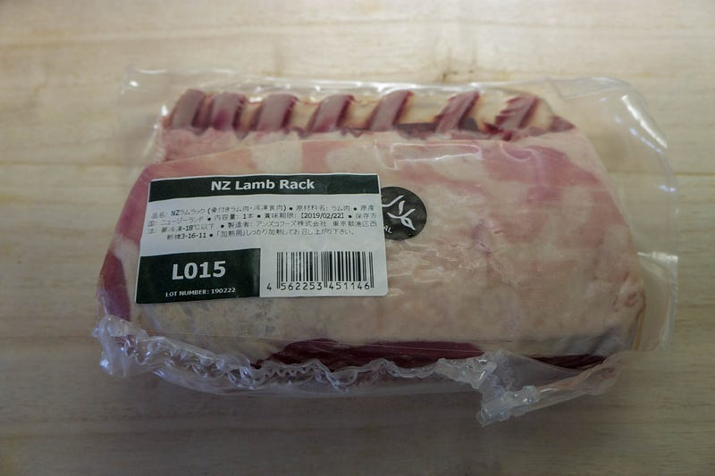
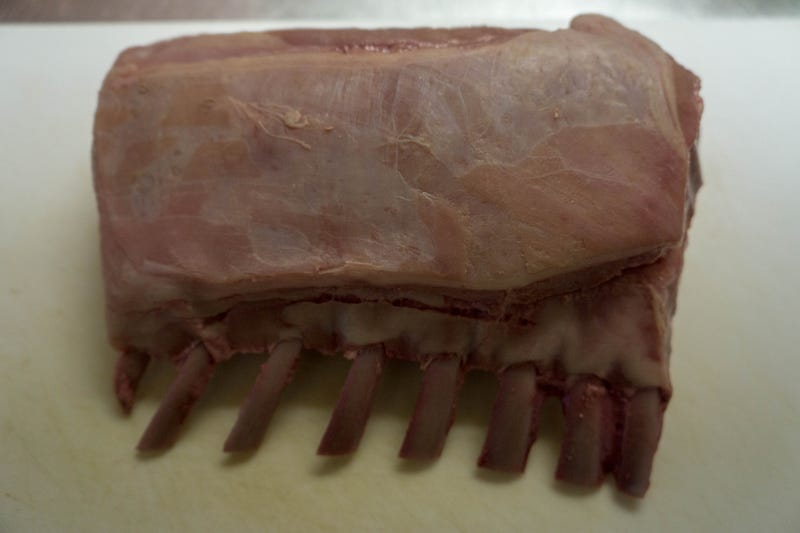
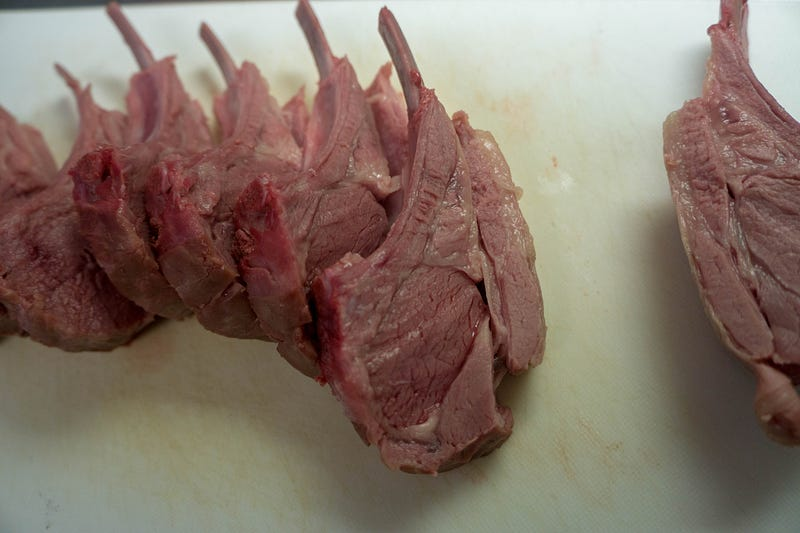
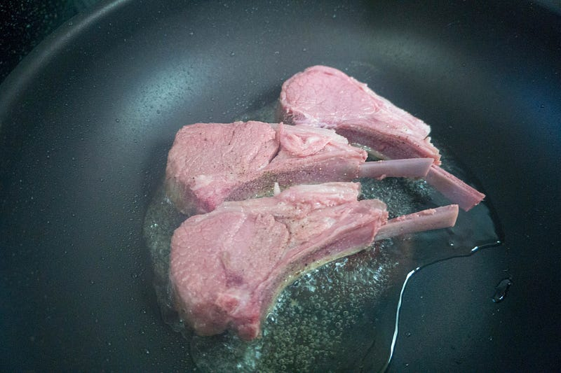
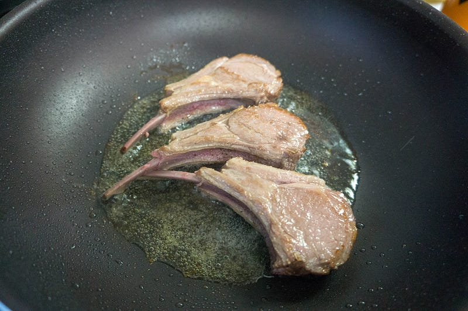
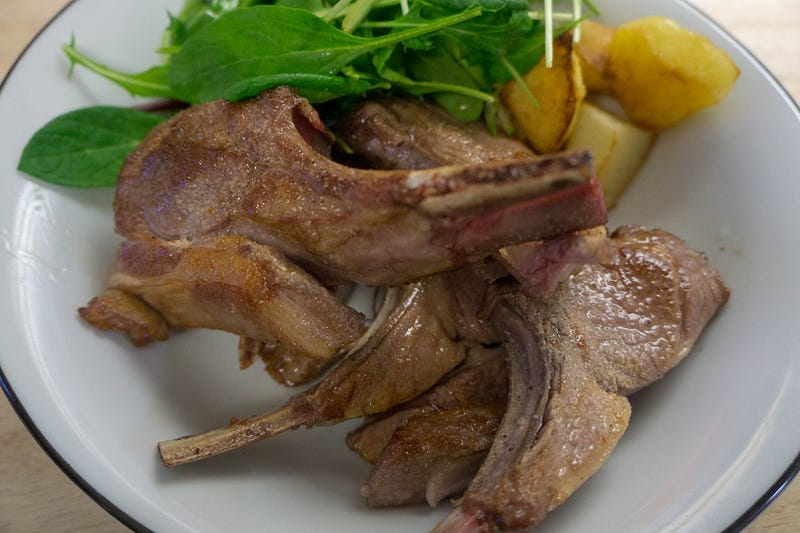

ラムラック （ラムチョップ）をanovaで確実に美味しく食べる
ラムラック （ラムチョップ）をanovaで確実に美味しく食べる
妻は欧米料理にあまり縁が無く育ったのだけれども、よりによって筆者と出会ってしまったが故に、ラムだ鴨だ鹿だ猪だなどを様々な洋風な手法で食べさせられたりと教育を施されてしまった。そんな妻が「…ラム肉が食べたい」と伝えてきたのである。作りましょう！
希望を妻に伝えられたのは水曜日の夜。肉の部位を言われなかったので、
「食べたいのはラムラック？」
「それともラム肩肉とか？」
という質問に「ラムラック−（はぁと」と伝えられたので、早速いつものMeat Guyからオーダーした。
商品説明 ニュージーランド産の少し小ぶりのフレンチラムラック。TheMeatGuyオリジナルのラムラブスパイスミックス付。 フレンチラムラックフレンチラムラックとは、仔羊のロースのあばら骨の付いたものです。 ...www.themeatguy.jp
最速で受付から二日くらいで届くのでこれで金曜日か土曜日に冷凍ラムラックが届くはず。
届いたのは土曜日の夜。ラムラックだけではなんなので、ラムシャンク（すね肉）も頼んで別日に食べることにする。

通常、ラムラックを焼く場合正しい手順を踏んで、焼く前に常温に戻しておく必要があるけれど、そこはanovaさん。がちがちの冷凍を突っ込んでも、加熱時間を2時間くらい追加する程度で、味はそれほど差はない（差が全くない、とは言わない）。今回は一晩だけ冷蔵庫で解凍しておいた。
・スマホと連動してお鍋の水温をコントロール。もう失敗はありません！ ・ポンプ速度：毎分7〜8リットル、360度回転のポンプ ・温度範囲(25℃-99℃) ・アプリでリモート操作（操作できる範囲が限られています）…www.amazon.co.jp
今回の加熱はanovaで55℃。通常3〜4時間やるところだけれども、まだ半分冷凍の状態で始めたので、6時間ほど加熱することにする。真空パックの状態のままだいたい朝8時くらいから始めて、1時半〜2時くらいに止めた。

夕飯用なので、調理1時間くらい前からもう一度 55℃に加熱して、仕上げ作業。今回はBBQするわけじゃなし、先に食べやすい形に切ってから仕上げをすることに。

ラムは売ってる状態の真空パックのままanovaで加熱しているのでこの時点で一切味はついていない。なので塩味をこの時点で決めるため、強めに塩するとよいと思う。今回は、仕上げで焼く前に基本の塩胡椒をふり、焼いてから気持ちばかりの微調整で塩を再度ふった。
油を熱しておいて、ばーん。

ひっくり返して、ばーん

外側の脂身を重点的に強火で攻めることによって、脂身もカリカリでおいしくなるし、それでも時間的には極々短くしか加熱してないので中身はキレイなピンク色。最高だ。
サラダとジャガイモを添えてできあがり（ここから子供に取られたりするので決してこの量が一人前というわけではありません…）

このラムも別に最高級のラムってわけじゃないけれども、とにかく柔らかく、ジューシーでうまい。焼きのタイミングも調整できるの最高である。骨付き肉もanovaで下ごしらえ、超おすすめです。妻も喜んでいたのでめでたしめでたし。